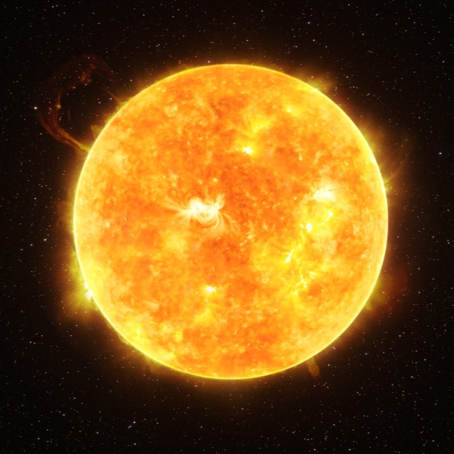

introduction
The Sun is the star at the center of the Solar System. It is a massive, hot ball of plasma, inflated and heated by energy produced by nuclear fusion reactions at its core. Part of this energy is emitted from its surface as light, ultraviolet, and infrared radiation, providing most of the energy for life on Earth. The Sun has been an object of veneration in many cultures. It has been a central subject for astronomical research since ancient times.
Mean radius: 696,340 km
Surface area: 6.09×1012 km2 2.35×1012 sq mi (12,000 × Earth)
Surface gravity: 274 m/s2 900 ft/s2 (28 × Earth)
Atmosphere
Composition by volume- 73.46% hydrogen
- 24.85% helium
- 0.77% oxygen
- 0.29% carbon
- 0.16% iron
- 0.12% neon
- 0.09% nitrogen
- 0.07% silicon
- 0.05% magnesium
- 0.04% sulphur
Picture
About1
The Sun moves around the Galactic Center of the Milky Way at a distance of 26,660 light-years. From Earth, it is on average 1 AU (1.496×108 km) or about 8 light-minutes away. Its diameter is about 1,391,400 km (864,600 mi; 4.64 ls), 109 times that of Earth. Its mass is about 330,000 times that of Earth, making up about 99.86% of the total mass of the Solar System. Roughly three-quarters of the Sun's mass consists of hydrogen (~73%); the rest is mostly helium (~25%), with much smaller quantities of heavier elements, including oxygen, carbon, neon, and iron.
about2
The Sun is a G-type main-sequence star (G2V), informally called a yellow dwarf, though its light is actually white. It formed approximately 4.6 billion years ago from the gravitational collapse of matter within a region of a large molecular cloud. Most of this matter gathered in the center, whereas the rest flattened into an orbiting disk that became the Solar System. The central mass became so hot and dense that it eventually initiated nuclear fusion in its core. It is thought that almost all stars form by this process.
closing
Every second, the Sun's core fuses about 600 million tons of hydrogen into helium and converts 4 million tons of matter into energy. Far in the future, when hydrogen fusion in the Sun's core diminishes to the point where the Sun is no longer in hydrostatic equilibrium, its core will undergo a marked increase in density and temperature which will cause its outer layers to expand, eventually transforming the Sun into a red giant. This process will make the Sun large enough to render Earth uninhabitable approximately five billion years from the present. Subsequently, the Sun will shed its outer layers and become a dense type of cooling star (a white dwarf), and no longer produce energy by fusion, but it will still glow and give off heat from its previous fusion for trillions of years. After that it is theorized to become a super dense black dwarf, giving off no more energy.